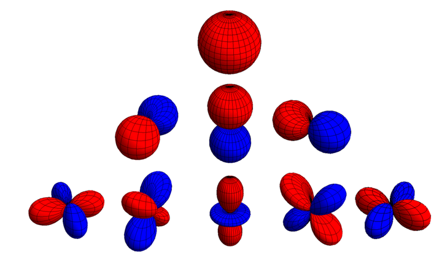
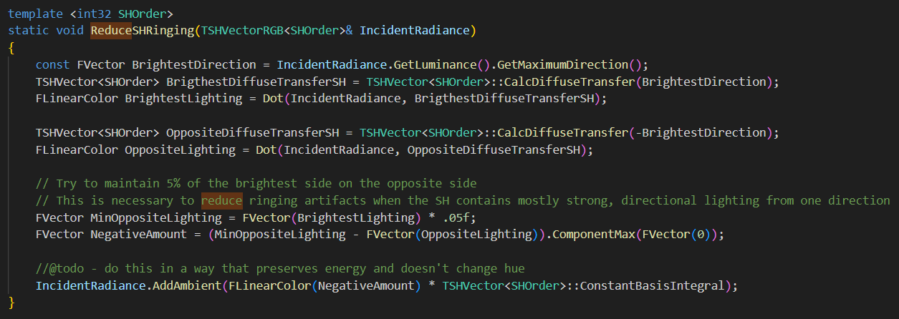

球谐函数在实时渲染中，常常被用于拟合球面函数，例如环境贴图，光照探针等。
什么是Ringing？
众所周知，低阶Spherical Harmonics（下称SH），只擅长拟合低频信息。如果强行使用低阶SH拟合高频Cubemap，就会导致球谐异常震荡，在采样时出现一些异常值。
例如：
- 一张Cubemap中有一些小而亮的光源，亮度>1，其余部分亮度很小，大多接近于0。
- 亮面（亮度>10）和暗面颜色（亮度<0.1）差距过大。
以上情况均容易产生球谐Ringing的问题（图待补充），经常表现为采样出负值。
UE4 ILC的补偿法
很直观，把亮度最小的方向，补偿到亮度最大方向的0.05即可。
那么亮度最大的方向，是哪个方向呢？

其实很直观，就是一阶球谐的三个方向，即(-f11,-f1-1,f10)
UE4.26代码位置
- UpdateCache() // IndirectLightingCache.cpp
- FinalizeUpdateInternal_RenderThread()
- UpdateBlocks()
- UpdateBlock()
- InterpolatePoint()
- PrecomputedLightVolume->InterpolateIncidentRadiancePoint() （PrecomputedLightVolume.cpp）计算AccumulatedIncidentRadiance
- ReduceSHRinging(AccumulatedIncidentRadiance)
- InterpolatePoint()
- UpdateBlock()
- UpdateBlocks()
- FinalizeUpdateInternal_RenderThread()

UE4 VLM的曲率约束法
拉普拉斯算子能描述函数当前值$f(x)$与其附近周边点的平均值之间的差值，也可以近似理解为曲率。
其值越小，则振铃效应越小。基于这个特性，我们可以求一个新的球谐函数$g$，能最小化如下误差：
$E$对$g$求导，令导数 = 0，能得到$g$和$f$的关系：
令$L_l = l^2(l+1)^2$，有$g_k = \frac{f_k}{1+\lambda L_l}$，令$B$为$(f_k)^2$
则拉普拉斯算子：
根据用户指定的拉普拉斯算子值，可以得到一个关于$\lambda$的方程，使用牛顿迭代法求解方程的根即可。
解出$\lambda$即可带入求出$g$。
UE4.26代码位置
AdaptiveVolumetricLightmap.cpp ProcessVolumetricLightmapBrickTask()
SHMath.h：FindWindowingLambda()
其他方法
此外窗函数法因为没法实时处理，因而不在考虑范围内。
以上两种方案，测试下来，都难以彻底消除高亮区域对暗部产生的影响。
例如，高亮是红色，暗部原本是蓝色的球谐，因为拟合出现Ringing导致暗部蓝色采样出来变成负值，此时使用上述两种方法Deringing后，负值处都变成了淡红色。
问题的本质在于低亮度和高亮度一起投影到球谐相互影响。
如果已知球谐需要采样的normal方向，可以考虑仅积分normal上半球来避免上下半球亮度差距过大，给球谐拟合带来的影响。